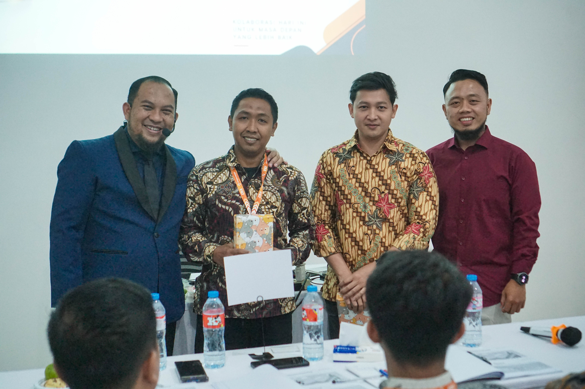

EDITOR'S PICKSTRATEGI BISNIS
Membangun bisnis yang bertumbuh sehat, bukan sekadar cepat
Pertumbuhan yang baik bukan hanya soal angka penjualan. Kenali fondasi yang membantu bisnis berkembang tanpa kehilangan arah, kualitas layanan, dan kekuatan tim.
Baca artikel
Pertumbuhan yang sehat dimulai dari tujuan yang jelas. Tentukan perubahan yang ingin dicapai, pahami kebutuhan pelanggan, lalu pilih prioritas yang benar-benar mendukung arah bisnis.
Setelah prioritas ditetapkan, susun langkah yang bisa dijalankan dan dievaluasi bersama tim. Periksa kemajuan secara berkala agar strategi tetap relevan dengan kondisi usaha, bukan sekadar menjadi rencana di atas kertas.